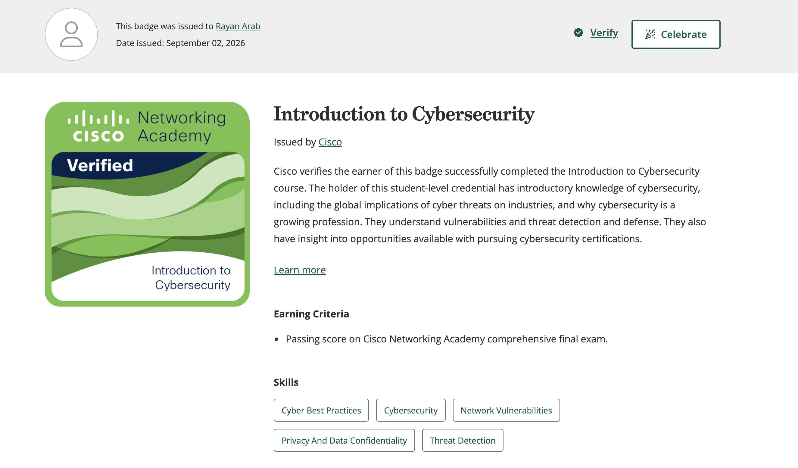
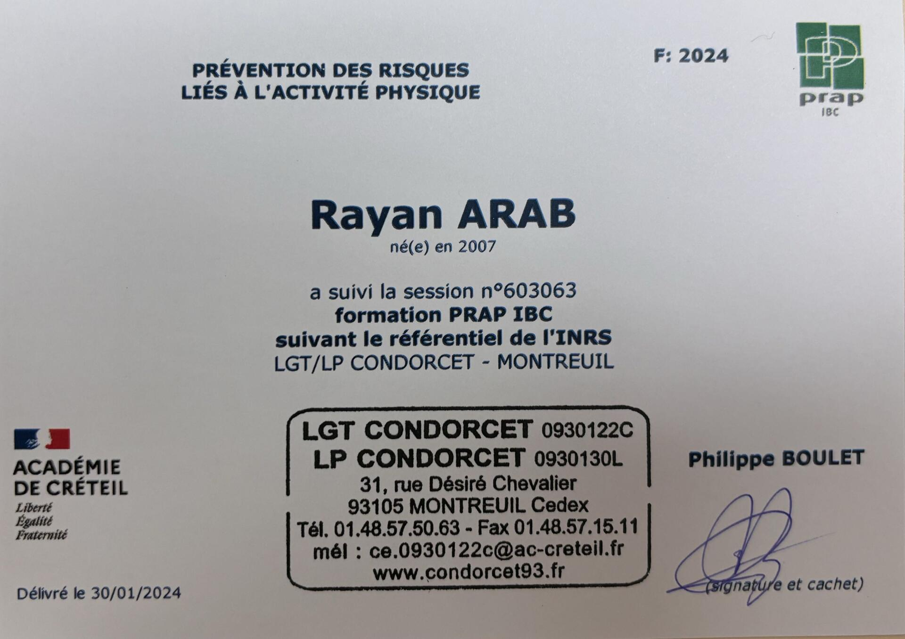
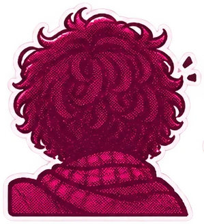

01
Identifier le problème signalé
Étudiant en BTS SIO option SISR au lycée Turgot, à Paris.
Réseaux, systèmes, support IT et cybersécurité.
Tourne le bouton ou appuie sur ← → pour zapper
Moi c’est Rayan . Réseaux , serveurs et postes : je fais en sorte que ça tourne
Je m’appelle Rayan Arab, étudiant en BTS SIO option SISR, en formation aux systèmes et réseaux. Ce qui m’intéresse avant tout, c’est l’administration système, réseau et infrastructure — le genre de sujets qu’on retrouve côté DSI. J’ai déjà une première expérience concrète en administration Windows/Linux, configuration réseau et support IT.
Je m’intéresse aussi aux réseaux Cisco, à l’adressage et à la supervision, ainsi qu’au diagnostic matériel et à la maintenance des postes. La cybersécurité vient compléter cette pratique, comme un prolongement naturel de l’administration systèmes.
Mon objectif est simple : rejoindre une entreprise où évoluer sur la durée, préparer une licence professionnelle réseaux ou cybersécurité, puis me spécialiser. Pas de plan B, une direction claire.
↓ continue de défiler, les cartes s’étalent
Les outils et savoir-faire que je mobilise en support, en déploiement et en infrastructure.
Comprendre et configurer les bases d’une infrastructure réseau : adressage IP, VLAN et diagnostic des problèmes de connexion.
Surveiller les équipements et repérer les incidents pour conserver un réseau disponible et facile à dépanner.
Créer et utiliser des environnements virtuels pour tester des installations et observer le fonctionnement des systèmes.
Installer, configurer et maintenir des postes sous Windows et Linux, avec une attention portée à la stabilité et au dépannage.
Identifier une panne matérielle ou logicielle, installer les pilotes et remettre un poste en service.
Déployer des images système et utiliser des outils d’IA générative pour accélérer la création de solutions utiles.




Cinq réalisations menées sur le terrain, entre maintenance, déploiement, stockage, organisation et création d’outils utiles.
Continue de défilerUne application développée à deux pour remplacer un tableur et suivre le stock de matériaux des ateliers. Le tableau de bord se met à jour à chaque mouvement, les seuils déclenchent des alertes et les droits sont adaptés à chaque métier.
Remise en état de 50 postes répartis dans les salles du lycée : restauration d’images Windows, installation des derniers pilotes, mises à jour et configuration allégée pour limiter les pannes et faciliter la maintenance.

Mise en place d’un NAS Buffalo TeraStation pour centraliser les fichiers du centre audiovisuel. Un projet autour du stockage réseau, du partage et de la gestion des accès.
Organisation d’un after work annuel réunissant les étudiants actuels et les anciens du BTS SIO du lycée, toutes promotions confondues. Dans la continuité de cette dynamique, une cagnotte est actuellement en cours entre les 1ʳᵉ et 2ᵉ années pour financer un voyage commun aux deux promotions.
Une application web créée avec l’aide de l’IA pour suivre le travail de mon groupe sur le Plot 7 : tâches et planning, schéma de l’infrastructure, fichiers, discussion et appels réunis au même endroit. Le site se synchronise en direct entre les membres et reste protégé par un mot de passe.
Les stages et la formation qui m’ont mené jusqu’ici.
Mon parcours ↓Une formation en systèmes et réseaux, complétée par deux stages centrés sur le support, le déploiement et la maintenance.
Vue d’ensemble de mes réalisations professionnelles et des compétences du BTS SIO qu’elles mobilisent.

Je suis l’évolution de la RAM, de la HBM et des SSD, notamment avec l’arrivée de l’IA.
Trois onglets pour tout comprendre : Synthèse (ma réponse à la question), Méthode (comment je fais ma veille) et Chronologie (les événements sourcés, filtrables par thème).
Face à une demande en mémoire tirée par l’IA que l’offre ne parvient pas à suivre, les utilisateurs ont-ils une véritable solution de repli ?
Plutôt non. Des solutions de repli existent sur le papier (DDR4, report d’achat, autre marque), mais la DDR4 renchérit elle aussi, la pénurie est annoncée sur plusieurs années et les décisions viennent des fabricants, pas des utilisateurs.
de hausse du prix de la DDR4 en trois mois.
de la DRAM mondiale, au maximum, verrouillée par OpenAI.
Année jusqu’à laquelle la pénurie pourrait durer, selon Barclays.
La demande en IA pousse les fabricants à produire des mémoires toujours plus rapides et plus proches des processeurs. La HBM est très performante, mais elle coûte cher et sa fabrication est complexe. En parallèle, la DDR5 reste importante pour les serveurs et les ordinateurs classiques.
Cette veille m’aide à comprendre une conséquence concrète pour l’infrastructure : les serveurs IA ont besoin de beaucoup de mémoire, ce qui peut augmenter les prix et rallonger les délais d’approvisionnement. Lire la source principale sur la mémoire et l’IA ↗
Face à une demande en mémoire tirée par l’IA que l’offre ne parvient pas à suivre, les utilisateurs ont-ils une véritable solution de repli ?
Disponible pour un stage, une alternance ou simplement échanger sur une opportunité en réseaux, infra ou cybersécurité.
arab.rayan9307@gmail.com↗Île-de-France
Stage · Alternance · CDI

Le réseau peut encore être rétabli. Rejoins mon réseau LinkedIn pour relancer la diffusion.